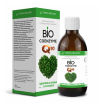

Главная / Каталог / Здоровье Алтая / #061 / БИО Коэнзим Q10, 200 мл
Потребность в коэнзиме возникает в разные периоды жизни: во время стрессов, усиленных физических нагрузок, после болезней и во время эпидемий. Если вещество недостаточно вырабатывается организмом, значит нарушена работа внутренних органов. Страдают печень, сердце, мозг, ухудшаются их функции. Потребность в дополнительном приеме кофермента появляется с возрастом, когда органы и системы изнашиваются и требуют поддержки. Продуктами питания восполняется лишь небольшой недостаток. При дефиците коэнзима Q10 для лечебных целей необходим прием убихинона.
Bio Coenzyme Q10 Vesta Organic рекомендуется каждому мужчине для нормального синтеза половых гормонов и профилактики заболеваний предстательной железы, так как является источником цинка в биодоступной форме, и каждой женщине – для поддержания репродуктивной функции.
UAH 520.00
Телефон: 0982164968
Телеграм Чат: https://telegram.me/vesta_organic_ua
Телеграм Канал: https://t.me/ua_vesta_organic
Способ применения: взрослым и детям старше 12 лет по 1 чайной ложке 2 раза в день во время еды, запивая водой. Продолжительность приёма – от 3 до 6 месяцев. Возможен осадок. Перед применением встряхнуть флакон.
Противопоказания: индивидуальная непереносимость компонентов, беременность, кормление грудью, возраст до 12 лет. Перед применением рекомендуется проконсультироваться с врачом.
Срок годности: 2 года с даты изготовления.
Условия хранения: хранить при температуре не выше 25°С.
Форма выпуска: флакон из темного стекла объемом 200 мл.
Применение Bio Coenzyme Q10 Vesta Organic рекомендуется в следующих случаях:
- при нарушениях работы сердечно-сосудистой системы, в том числе стенокардии, сердечной недостаточности, инфаркте миокарда, атеросклерозе, аритмии, артериальной гипертензии;
- при болезни Паркинсона;
- при болезни Альцгеймера;
- при деменции (слабоумии);
- при рассеянном склерозе;
- при депрессии;
- при онкозаболеваниях (в профилактических целях, а также для торможения роста злокачественных новообразований);
- при анемии;
- при сахарном диабете;
- при заболеваниях желудочно-кишечного тракта;
- при заболеваниях печени;
- при заболеваниях почек;
- при заболеваниях опорно-двигательного аппарата;
- при ослабленном иммунитете (является натуральным иммуномодулятором);
- при мышечной дистрофии;
- при ожирении и во время коррекции массы тела (провоцирует усиленное сжигание жировых отложений, способствуя снижению веса);
- при заболеваниях органов дыхания;
- при хронических инфекционных заболеваниях;
- при заболеваниях ротовой полости;
- при высоких физических и умственных нагрузках;
- при ломкости волос и ногтей.
Состав: масло амаранта, масло семян тыквы, убихинон (кофермент Q10), живица кедровая, экстракт травы чабреца, экстракт цветков тысячелистника, экстракт мяты, витамин С, витамин Е.
Bio Coenzyme Q10 Vesta Organic не содержит синтетических, лекарственных, генномодифицированных веществ и консервантов.
Масло амаранта - обладает уникальными антимикробными, антиканцерогенными и фунгицидными свойствами за счет содержания в нем сквалена. Входящий в состав сальных желез и подкожно-жировой клетчатки сквален является важным участником процессов синтеза стероидных гормонов, холестерина и витамина D в организме человека. Сквален, содержащийся в амарантовом масле, активно способствует насыщению органов и тканей кислородом, оказывает мощное противоопухолевое и антиканцерогенное действие, а также в значительной мере повышает устойчивость человеческого организма к различным вирусным, грибковым, бактериальным инфекциям и к воздействию вредного радиоактивного излучения.
Масло семян тыквы – настоящий целитель, способный справиться с массой заболеваний, носит название «черного золота» из-за дороговизны его производства (чтобы получить 1 литр масла понадобится около 30 плодов тыквы и трудоемкие технологии). Но добавление в рацион даже в незначительных количествах избавит от необходимости принимать целый ряд лекарственных средств.
В его составе масса нужных организму веществ: это макро- и микроэлементы – железо, магний, цинк, селен, калий и кальций, легкоусвояемые белки, витамины – А, В, Е, F,T, K и другие биологически активные вещества.
Большое содержание полиненасыщенных жирных кислот омега-3, омега-6 позволяет лучше работать многим системам организма (сердечно-сосудистой, эндокринной, нервной, пищеварительной), улучшает жировой обмен, организм быстрее выводит вредные вещества, приводит в норму гормональный баланс, укрепляется иммунитет.
Коэнзим Q10 – это жирорастворимое соединение, кофермент, базируется преимущественно в митохондриях и отвечает за синтез энергии в организме. В наибольшем количестве накапливается в тех органах, энергетические потребности которых велики – в сердце, печени, мозге.
Работа по изучению коэнзима Q10 ведется много десятилетий. За время клинических испытаний выявлена масса полезных свойств этого соединения, а одна из научных работ по обоснованию его терапевтического действия удостоена Нобелевской премии.
По статистике, человек ежедневно получает лишь 1/10 от необходимой суточной нормы коэнзима Q10. Именно поэтому так важно использовать дополнительные источники этого кофермента.
Живица кедровая - природный компонент, обладающий интенсивным ранозаживляющим, антибактериальным, противовоспалительным, противогрибковым действием. Нормализует обмен веществ, снижает уровень холестерина в крови, выводит из организма токсичные элементы и радионуклиды, снижает риск простуд, воспалительных процессов, восстанавливает пищеварительную систему при воспалении и инфекциях.
Экстракт травы чабреца - обладает успокаивающим действием, помогает нормализовать работу нервной системы. При стабильном употреблении можно справиться с депрессией, бессонницей и плохим настроением. Имеет бактерицидные свойства, эффективно справляясь с инфекциями разного происхождения, укрепляет иммунитет. Действует как очищающее средство при пищевом отравлении. Экстракт чабреца необходим для улучшения результатов в похудении. Связано это с его положительным влиянием на работу пищеварительной системы, при обмене веществ. Помогает вывести лишнюю жидкость, избавляет от отеков.
Экстракт цветков тысячелистника - необходим для нормализации пищеварительной системы, а также для лечения гинекологических заболеваний у женщин и лечения аденомы простаты у мужчин. Вещество хамазулен в его составе обеспечивает противовоспалительное и бактерицидное воздействие на органы пищеварения, которое усиливается благодаря присутствию дубильных веществ. Обладает гипоаллергенными, желчегонными и антибактериальными свойствами, а также положительно влияет на различные органы человеческого тела – сердце, опорно-двигательный аппарат, печень и почки.
Bio Coenzyme Q10 Vesta Organic – натуральный продукт премиального класса, который содержит в своем составе коэнзим Q10 (убихинол) в чистом виде, а также полезные для здоровья человека масла: амаранта, семян тыквы.
Все масла, входящие в состав Bio Coenzyme Q10 Vesta Organic, Extra Virgin – экстра натуральные, то есть нерафинированные масла первого холодного отжима – самый дорогостоящий и ценный вид масел. В их химическом составе сосредоточено наибольшее количество всевозможных полезных соединений, которые обуславливают целебные свойства данных масел.
Потребность в коэнзиме возникает в разные периоды жизни: во время стрессов, усиленных физических нагрузок, после болезней и во время эпидемий. Если вещество недостаточно вырабатывается организмом, значит нарушена работа внутренних органов. Страдают печень, сердце, мозг, ухудшаются их функции. Потребность в дополнительном приеме кофермента появляется с возрастом, когда органы и системы изнашиваются и требуют поддержки. Продуктами питания восполняется лишь небольшой недостаток. При дефиците коэнзима Q10 для лечебных целей необходим прием убихинона.
Уникальный состав Bio Coenzyme Q10 Vesta Organic обусловлен тем, что убихинон является жирорастворимым соединением и лучше всего усваивается с селеном. Поэтому в состав продукта входят высококачественные масла с высоким содержанием селена.
Bio Coenzyme Q10 Vesta Organic рекомендуется каждому мужчине для нормального синтеза половых гормонов и профилактики заболеваний предстательной железы, так как является источником цинка в биодоступной форме, и каждой женщине – для поддержания репродуктивной функции.
Bio Coenzyme Q10 Vesta Organic способствует выработке эритроцитов, лейкоцитов и других составляющих компонентов крови, укрепляет стенки сосудов, делает их более эластичными, усиливает внутриклеточный обмен веществ, понижает уровень холестерина в крови, обладает противоаллергической активностью, способствует улучшению зрения, защищает кожу.